Parcel Shipping Simulator - PaSS
-
Author:
Andrei
Sipoteanu
Motivation
The purpose of the application is to provide accurate information about the packages to be delivered to customers but also technical support for finding problems with the products already delivered
Structure
- Login / register page
- Home page containing:
- Ability to search for information about a particular package using the appropriate AWB number
- Services page containing:
- "standard delivery" option plus a short description of it
- "red code" option plus a short description
- Parcel Location page containing:
- The first option where you can search all the centers in the city of your choice
- The second option where you can write your location and show you the nearest centers
- Contact us page
- Profile page
Login/Register
The user can authenticate with the email and a password and can register with: first name, last name, email, password and address.
This page uses a simple design to be used by anyone regardless of age, field in which they operate. In the background we have a photo from the courier field, easy to follow and pleasing to the human eye
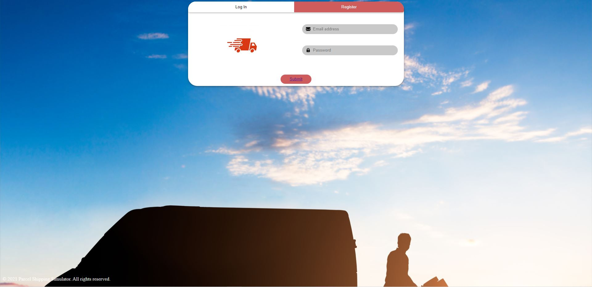 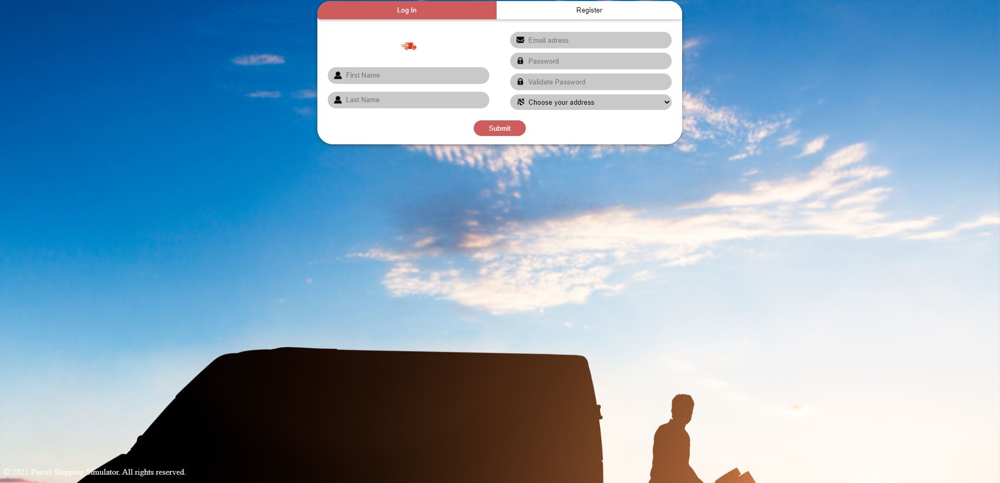Behind this page is a wireframe from which it started to reach the final page, it was indicative helping to create this page

This page started from a hand-drawn sketch on a tablet, and from this sketch it ended up in it:

Home Page
The application gives users the opportunity to find out information about the package they are waiting for. They can do this by inserting the unique AWB number, thus receiving all the necessary information. Users can also report a problem with the product they received and make a return back.
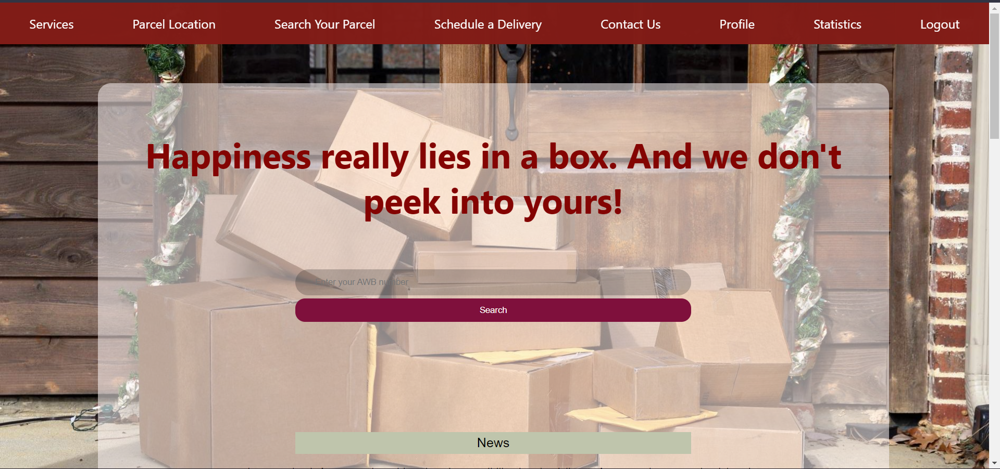The page has a simplistic design, with a transparent box that includes all the things that interact with the user. The text is easy to read with precise and uncomplicated things
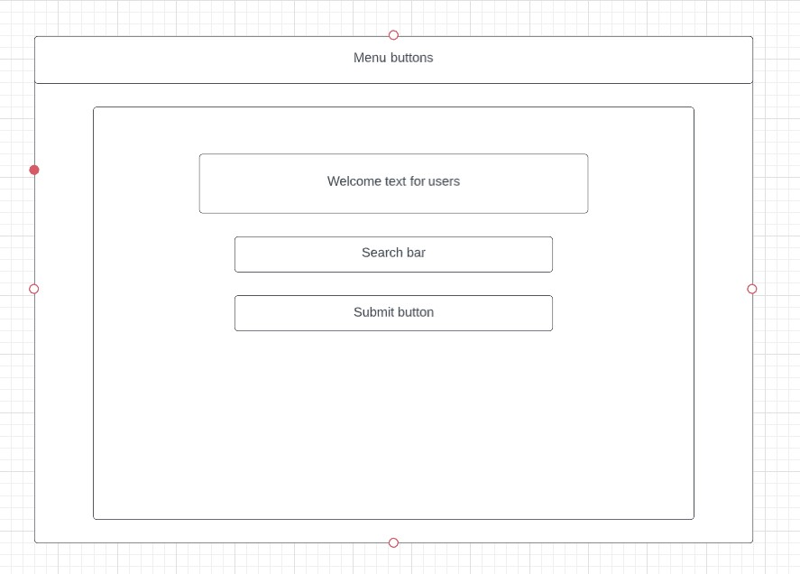Services Page
This page presents the services offered to the user in which he can choose between the two options what kind of delivery he wants to make.
As in the other pages, the design is simplistic with a few things on the page to make it easy to navigate. Paage is made in this way so that it can be used by anyone who wants to send a package, you do not need certain knowledge to send a package. As there are few things to read, the user does not get bored reading these things.
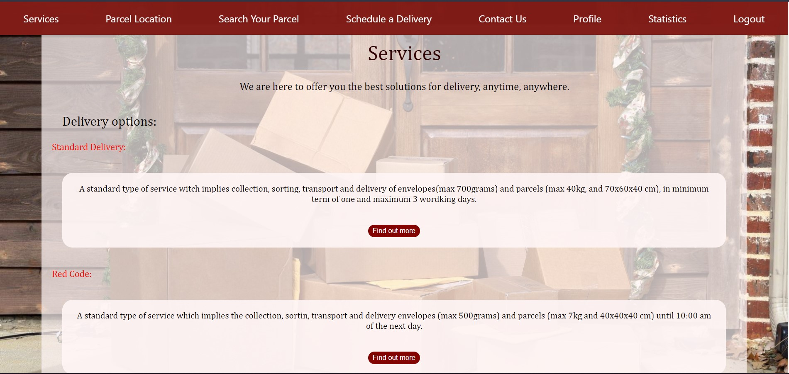The two delivery options are brief and do not make the user bored when reading them. Information is scarce and useful. In the page specific to the standard option we have details about the dimensions, the time in which the package can arrive, the rates and the completion dates for sending a package.
 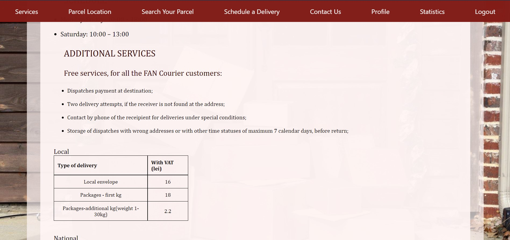
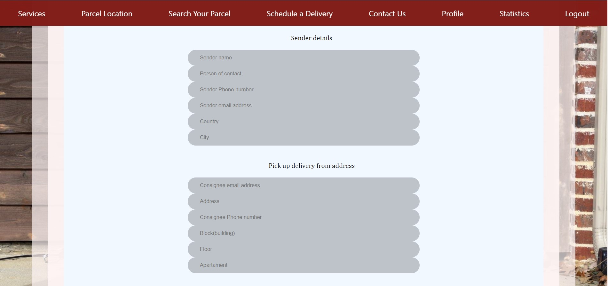
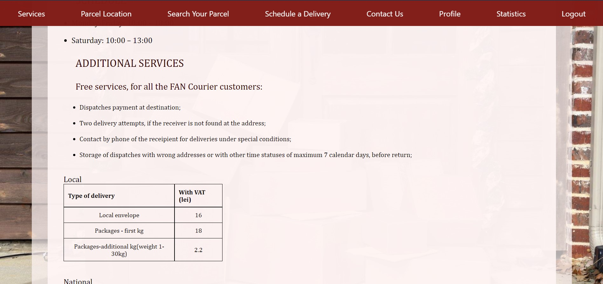
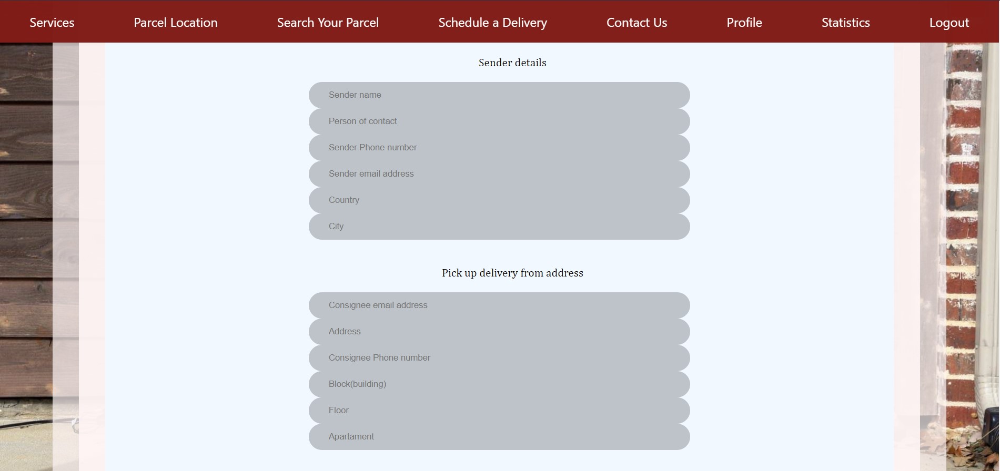
In the page specific to the "red code" option it is the same as the standard page, only the characteristics differ, because in the "red code" variants we want the packages to be sent in a short time.
In this part of the documentation we will discuss the wireframes related to this page
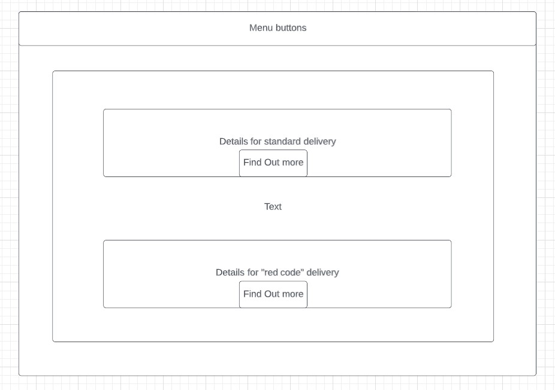 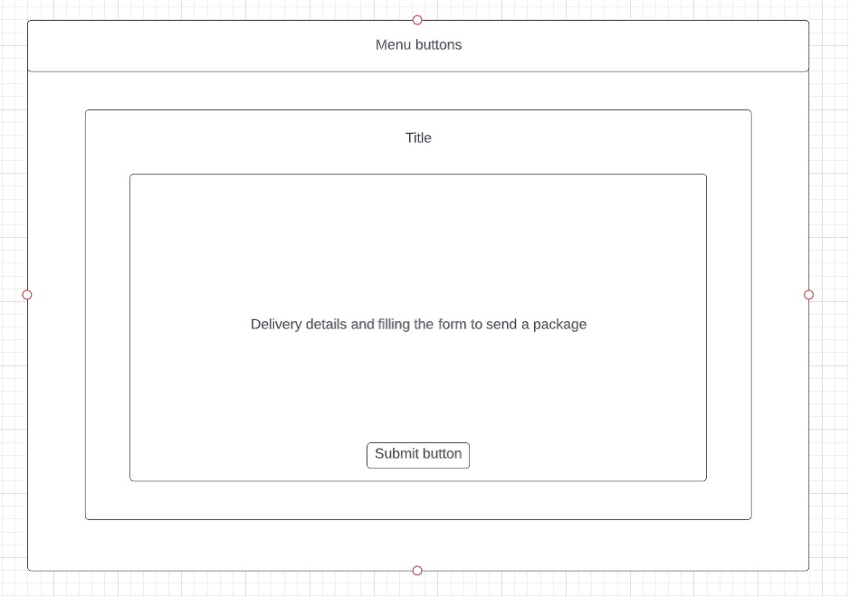Initial the wireframes looked something like this but when the design took place it became more comprehensive due to the information needed to send the packages
QOC (Questions, Options, Criteria)
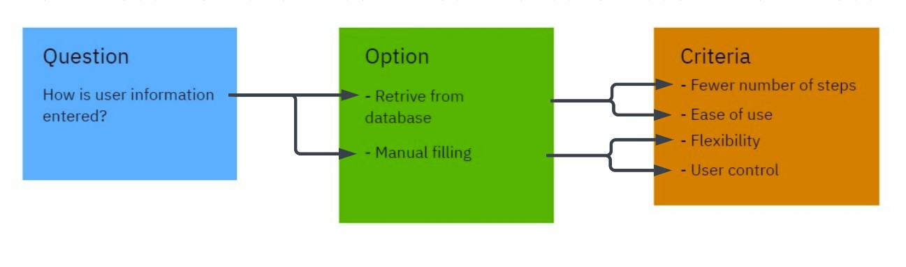 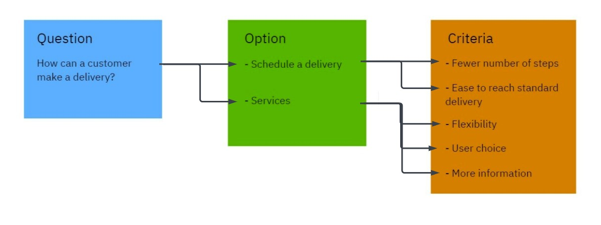Personas
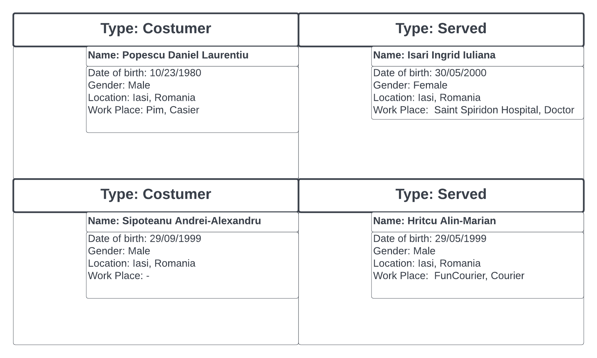To use this application you do not need high knowledge in a particular field or a high level of intelligence. This application is for anyone who wants to send a package, regardless of age or other things.